Ce projet, intitulé Shinobi Vision, consiste à développer une application interactive utilisant la webcam, et permettant à un utilisateur de déclencher différents effets visuels en réalisant des gestes avec la main dans une zone définie de l'image.
Il explore l'intersection entre la vision par ordinateur en temps réel et les effets spéciaux numériques. L'objectif est de créer une interface pour activer des sorts visuels inspirés de la culture pop (notamment Naruto et Jujutsu Kaisen) via des gestes manuels. Le défi technique réside dans la fluidité des transformations et la précision du détourage pour donner un rendu le plus naturel possible.
Ce rapport retrace les différentes étapes de l'implémentation.
Étape 1 - Capture webcam
La première étape consiste à établir un flux vidéo stable via la bibliothèque OpenCV. Une attention a été portée à l'inversion du flux (effet miroir avec cv2.flip()) pour rendre l'interaction plus intuitive pour l'utilisateur, transformant l'écran en un miroir réactif.
Étape 2 et 3 - Détection du visage et zone de gestes
Nous utilisons MediaPipe Face Mesh pour obtenir 468 points de repère faciaux en 3D. La version de MediaPipe utilisée est la 0.10.21, quelque peu ancienne mais stable et qui permet de ne pas utiliser la nouvelle API beaucoup plus verbeuse.
La fonction face_detection.process(rgb_frame) détecte le visage (après conversion de la frame en RGB), puis on récupère la boite englobante du visage avec detection.location_data.relative_bounding_box.
Une fois le visage détecté, la zone de gestes est placé juste dessous, afin d'avoir une zone délimitée pour les gestes.
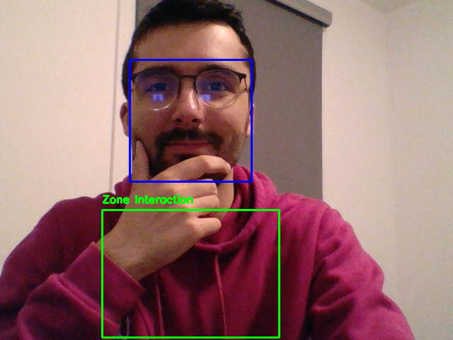
Les points clés comme le menton (point 152) ou les oreilles (234 et 454) servent de point d'ancrage pour définir une zone d'interaction (ROI - Region of Interest) dynamique qui suit l'utilisateur. Un problème venant avec cela est que si l'utilisateur sort du champ ou fait des mouvements rapides, les variables deviennent nulles. Donc nous avons implémenté des conditions de vérification pour éviter que le programme ne plante.
Étape 4 - Détection simple de geste
La détection repose sur MediaPipe Hands.
On récupère les différents landmarks des 2 mains, puis avec un calcul de la distance euclidienne entre les pixels correspondant aux landmarks, on peut définir si un geste est effectué ou non.
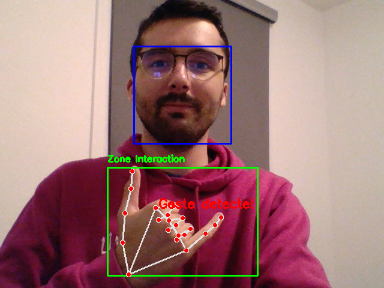
Un geste est alors bien détecté par l'application.
Étape 5 - Système de sorts
Une fois la détection de gestes implémentée, nous pouvons associer des gestes particuliers aux sorts. Pour cela, 3 gestes sont décrits et serviront de points de départ pour 3 sorts.
Clonage
Les index (landmarks 8) et majeurs (landmarks 12) des deux mains se touchent (distance inférieure à 20).
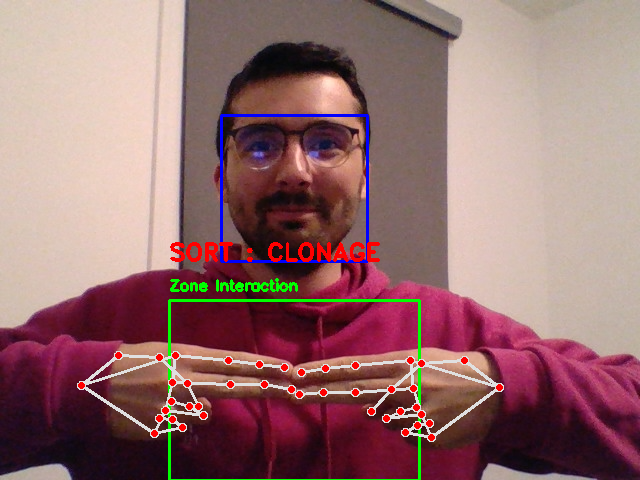
Flou
Geste en triangle où les deux index et les deux pouces (landmarks 4) se touchent.
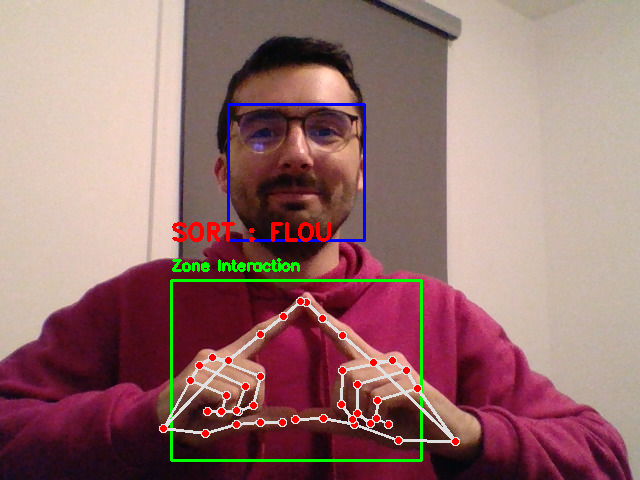
Transformation
Poings serrés et collés (bases des majeurs (landmarks 9) se touchent).
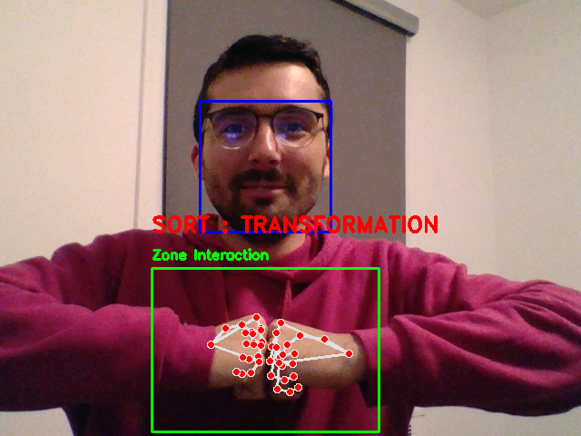
Aucun geste
Lorsqu'aucun des gestes n'est effectué, il n'y a bien aucun geste de détecté.
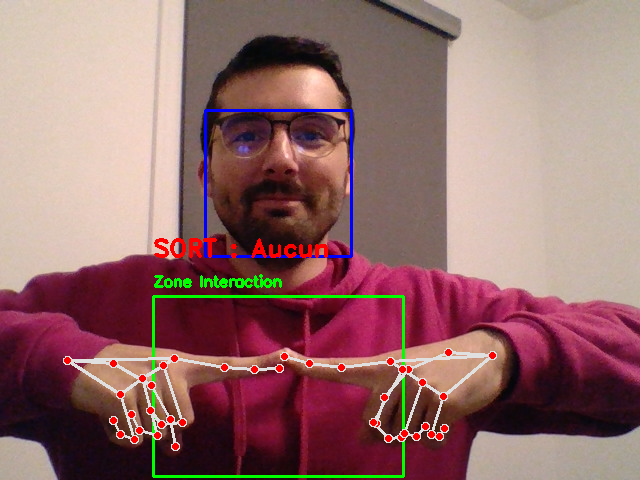
Étape 6 - Sort 1 : "Clonage"
On utilise la segmentation de silhouette pour extraire l'utilisateur et créer les clones, puis on redessine cette silhouette à plusieurs offsets (x, y).
Un problème qui est apparu était sur la superposition des clones, les clones de derrière étaient au premier plan, ce qui donnait un rendu peu réaliste. La solution trouvée est de l'afficher dans l'ordre souhaité en les triant selon y: d'abord ceux du fond, puis l'utilisateur, puis ceux de devant qui apparaissent ainsi au premier plan.
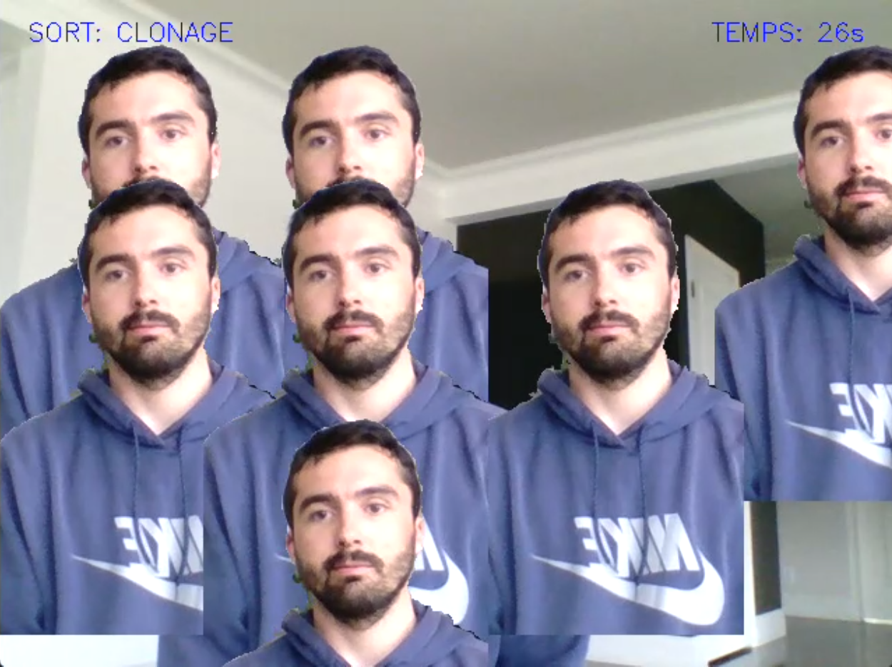
Voici la vidéo du lancement du sort et du test du sort.
Le geste est bien détecté et les clones sont bien positionnés autour de moi, le rendu est plutôt naturel avec des découpes précises de ma silhouette. On observe cependant que l'on perd les clones par moments, dû à un mouvement trop rapide ou le fait de pencher même légèrement qui peut perturber la détection du visage.
Étape 7 - Sort 2 : "Flou"
Il s'agit de l'application d'un filtre Gaussien sur une zone rectangulaire définie par le Face Mesh.
Cependant, le flou appliqué sur l'image principale rendait la frame illisible et empêchait la détection des mains. La solution est d'utiliser une copie de la frame pour l'affichage, afin que le programme puisse travailler sur la frame originale en continuant de détecter les gestes et les visages.
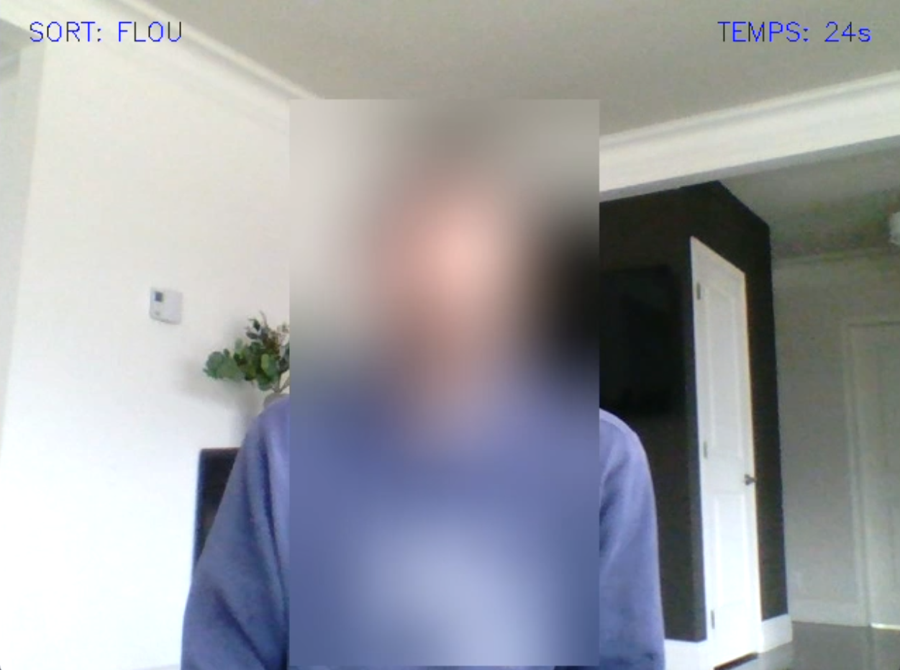
Vidéo du sort de flou :
Étape 8 - Sort 3 : "Transformation"
On emploie ici une transformation affine (cv2.getAffineTransform). Nous mappons un triangle de référence sur une image PNG (oreilles et menton) vers les points correspondants sur le visage de l'utilisateur, ce qui permet d'avoir un rendu fluide qui suit les mouvements.
Le changement des images se fait avec le clavier : '1' correspond au visage de Lionel Messi, '2' à Saitama et '3' au ballon de basket.
Sources des images :
Ballon de basket https://fr.vecteezy.com/png/26771748-basketball-png-avec-ai-genere
Visage de Lionel Messi https://wallpapers.com/lionel-messi-png?p=2
Visage de Saitama https://fr.vecteezy.com/png/51135727-celui-de-saitama-comique-caricature-une-dessin-anime-delice
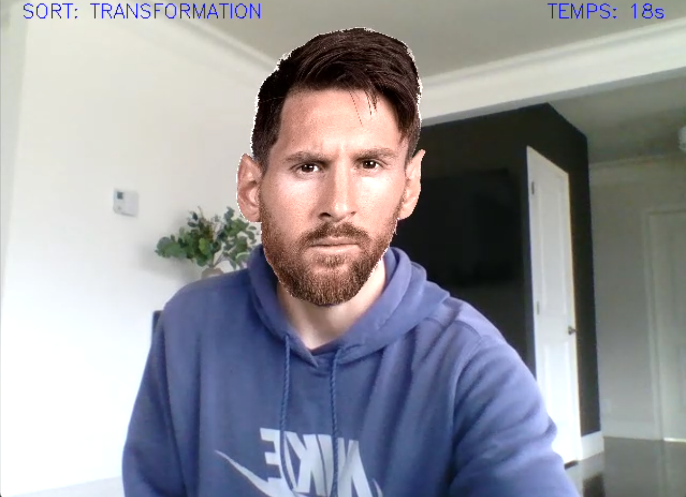
Vidéo du sort de transformation:
Le rendu est plutôt très bon, le visage collé suit mes mouvements lorsque j'ouvre le bouche ou je penche la tête. Mais lorsque je penche trop la tête en arrière on perd la superposition, à cause des seuls 3 points de correspondance qui ont été pris car cv2.getAffineTransform ne prend que 3 points.
Points supplémentaires ajoutés
Quelques points ont été ajoutés à la version de base, qui a rapidement été fonctionnelle.
Ajout du son à l'apparition des sorts
Utilisation de la bibliothèque pygame.mixer pour déclencher des fichiers audio de manière asynchrone. Cela renforce l'immersion en offrant de l'audio en plus du visuel à l'activation d'un sort.
Sources des fichiers audio :
Clonage : https://youtu.be/aEQIi0drDhY?si=82XHGumRSFybAEOp
Flou et transformation : https://youtu.be/elDunC0fcbo?si=HSMqnm3lQ4lWo1Pl
Territoire :
Disparition : https://youtu.be/-HMb7RFfZds?si=PfHCx9ksHemKVdIk
Maintien du sort (Timer de 30s)
Implémentation d'un système de persistance. Une fois le geste détecté, un timestamp (time.time()) est enregistré. Le sort reste actif pendant 30 secondes, ce qui libère les mains de l'utilisateur.
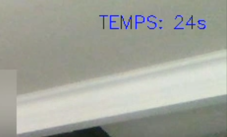
Ajout d'un sort "Cancel"
Une "croix" formée par les index permet d'annuler manuellement les sorts en cours via une détection de croisement des index.
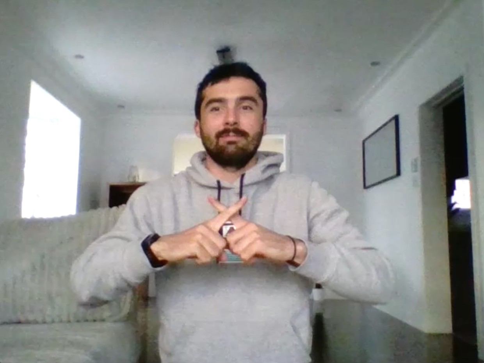
On peut vérifier son bon fonctionnement à la fin des vidéos de chaque sort.
Sort "Extension du Territoire"
Remplacement total du décor en arrière-plan via l'utilisation d'un masque de segmentation. Le fond bouge en fonction de la position du visage, créant une illusion de profondeur 3D sur une image 2D. Cela a été réalisé en agrandissant l'image de fond donnée, en me plaçant au centre initialement et en déplaçant l'image de fond affichée en fonction des mouvements de mon visage.
Ce sort a été implémenté avec un effet visuel de flash qui, en plus du son, ajoute une nouvelle dimension épique à l'application.
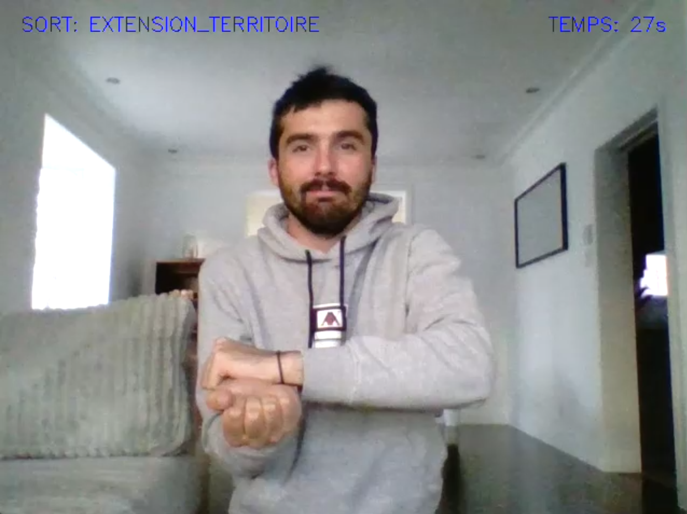
Le geste consiste à coller les 2 bases de paumes.
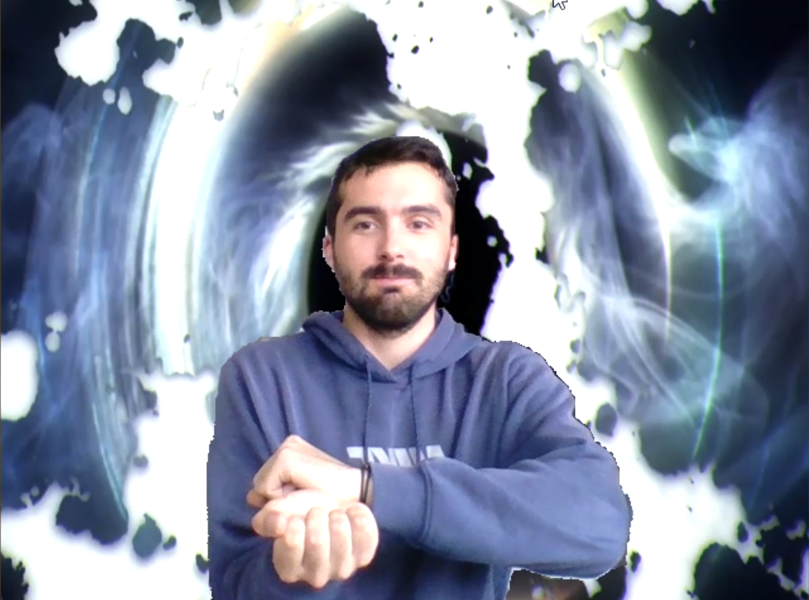
Vidéo du sort Extension du territoire:
Sort "Disparition"
Enfin, pour le sort de disparition, nous avons utilisé une image de substitution pour remplir le vide laissé par le corps segmenté. Le réalisme du rendu dépend énormément de l'image de fond choisi, et de sa correspondance avec le fond réel.
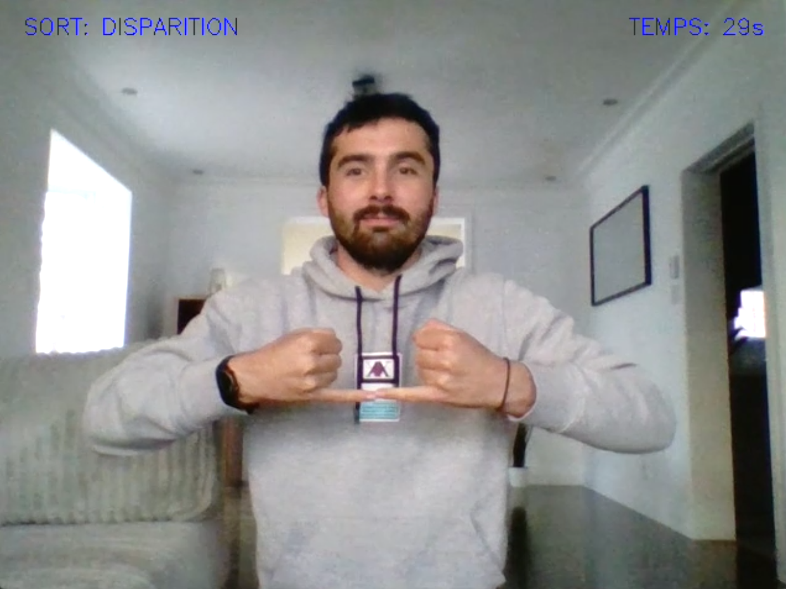
Le geste consiste à coller les 2 bouts des petits doigts.
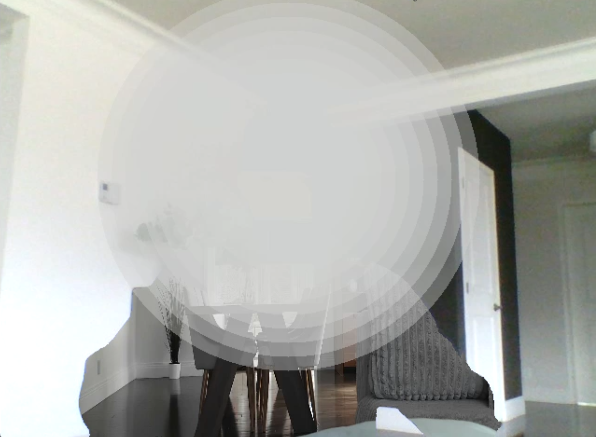
Un effet écran de fumée a été ajoutée lors de l'apparition du sort.
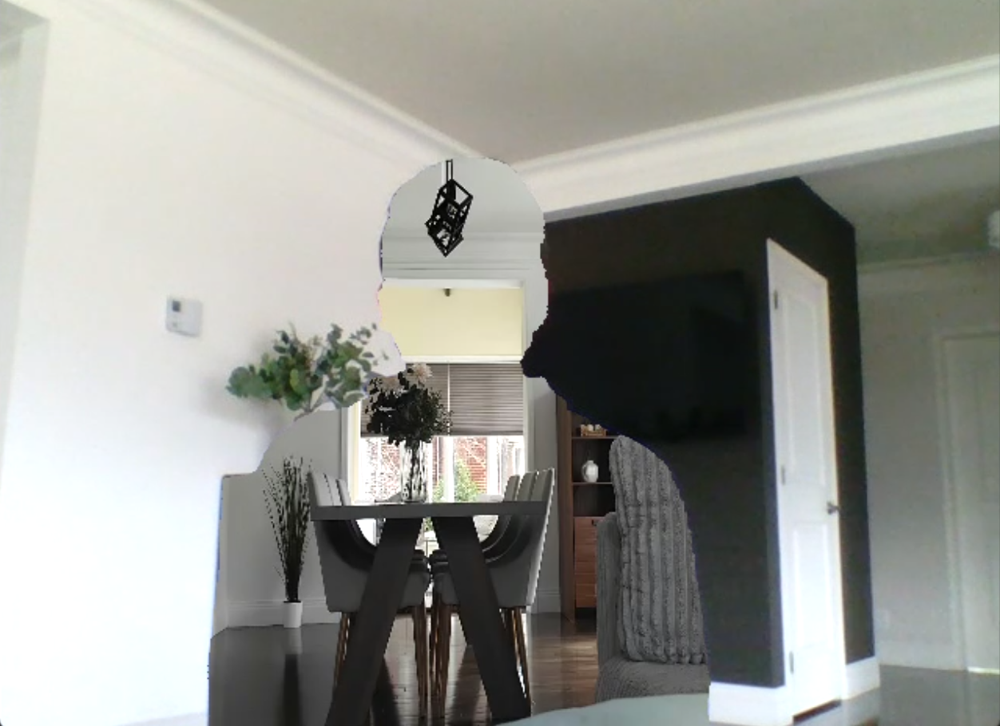
Vidéo du sort de disparition:
Le rendu est très correct. Mais comme dit précédemment, son réalisme dépend énormément de la concordance entre l'image de fond pour le remplissage et le fond réel.
Perspectives et Conclusion
Ce projet a utilisé les concepts de photographie algorithmique afin de créer des effets visuels complexes en temps réel à partir de gestes manuels.
Les rendus sont très corrects, l'ajout du son et des effets visuels ajoutent quelque chose en plus à l'unique sort.
Quelques perspectives peuvent être explorées : L'intégration de modèles de Deep Inpainting plus poussés permettrait de recréer le décor réel derrière l'utilisateur lors de la disparition, mais ce serait bien plus coûteux que de simples algorithmes de géométrie, et l'utilisation de la pose (MediaPipe Pose) permettrait des sorts liés au mouvement du corps complet.
En conclusion, "Shinobi Vision" réussit à transformer une webcam en un univers tout entier, avec différents sorts à explorer, et des possibilités infinies d'effets à immplémenter.